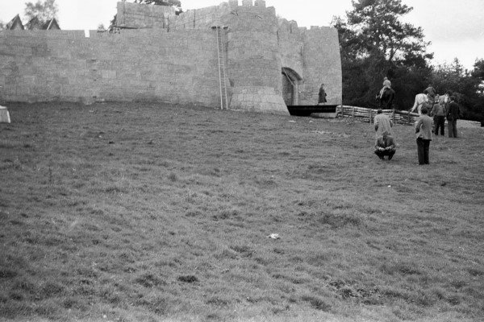
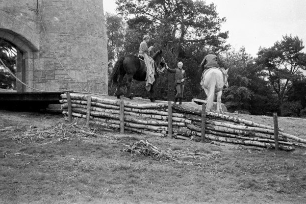
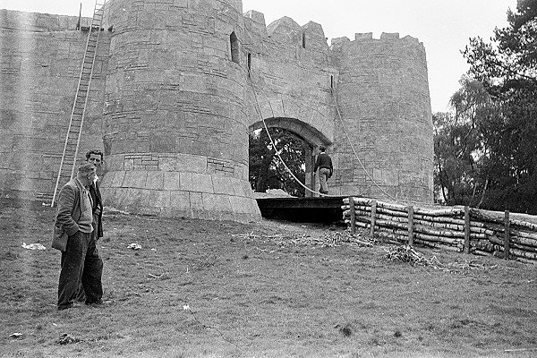
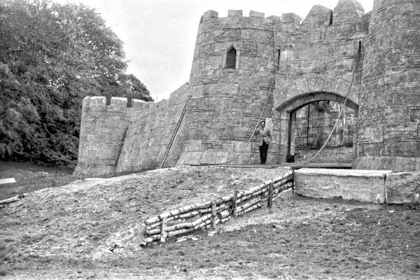
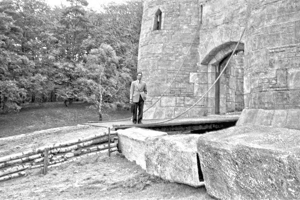
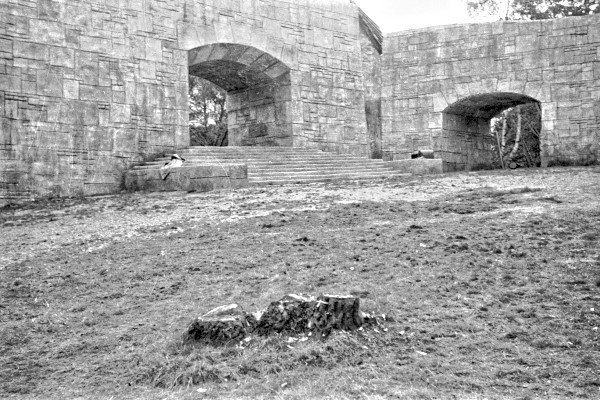
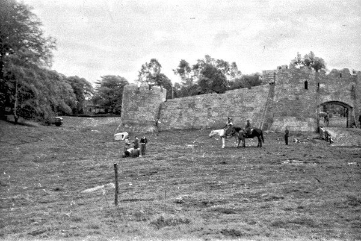
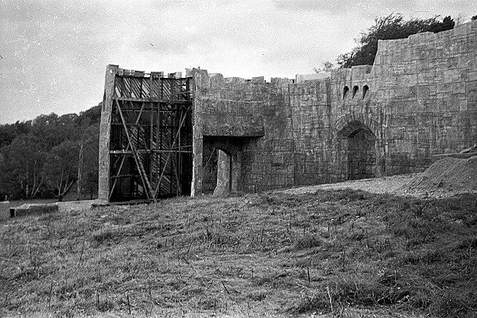
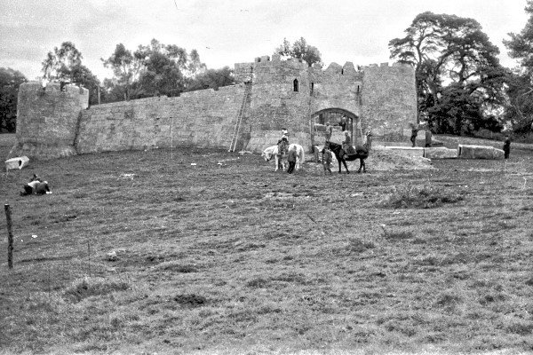
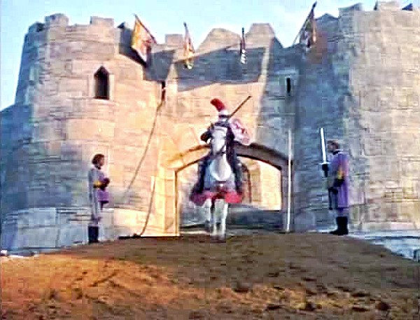

The Adventures of Robin Hood Locations
Notes by Gordon Thomson
Chapter
1 - Introduction
It includes photographs taken at the time of production by Art Director
Peter Mullins, who should of course be credited, as well as screengrabs
from certain episodes and pictures of the locations today.
The CD has been divided up into four sections, which are as follows:
* Art Director Peter Mullins photographs - this folder contains all of
Peter's photographs taken during production, divided into sub-folders
* Photographs - this folder contains all of my photographs of the
various locations used in the series as they are today
* Screengrabs - this folder contains screenshots taken from the series
DVDs, organised by location, series and episode
I hope that you will be able to use as much of this information as
possible, as nothing has been done before to identify locations on this
scale, since very little was ever written down at the time.
It has all taken a lot of work and time, but has certainly been worth
it. I came up with the series as a child, and have always had
a special affection for it.
Chapter 2 - Art
Director Peter Mullins' Photographs
Castle
built at Foxwarren and used in both The Adventures of
Robin Hood and The Adventures of Sir Lancelot









Photographs taken by Art Director Peter Mullins during production
General
views of Castle


The castle built at Foxwarren was built on a large, sloping field
flanked with mature trees.This area was frequently used,
especially in later series (3 and 4), particularly an episode
called The
Crusaders (series 3)
Halliford Village
The location of the village for THE
ADVENTURES OF ROBIN HOOD was
behind the Bugle pub on Upper Halliford Road (A244) near
Walton-on-Thames


Foxwarren
Castle as seen in THE
ADVENTURES OF SIR LANCELOT


Also constructed
on the Foxwarren field site


Chapter 3 - Locations
Photographs
Betchworth Quarry today
Is within the Mole Gap to Reigate Escarpment and is a SSSI (Site of
Special Scientific Interest) and a Special Area of Conservation
(SAC). It is an Area of Outstanding Natural Beauty and part
of the Surrey Hills area of the North Downs, and is managed by Surrey
Wildlife Trust. It was used in the Robin Hood episodes Ambush
(series 2) and Sybella (series 4).
Boldermere Lake today
Used in Robin Hood episode 'The Parting Guest' (series 4)
Foxwarren Field today
Present-day pictures of the field where the castle was built (for
series 2,3 and 4)
Foxwarren House and Garden today
* Hannah Weinstein's home
Foxwarren Park today
Foxwarren Park is behind the Foxwarren house and merges into Wisley
Common. Today the M25 cuts across the top of Wisley Common
(south of the M25, with Foxwarren Park to the north)
High Rocks, Tonbridge today - Frant, Royal Tunbridge Wells, Kent
The Robin Hood episode 'The Flying Sorcerer' (series 4) was where they
went away on location and had overnights, according to Art Director
John Blezard. This particular episode was filmed largely on
this location, a particular challenge due to the nature of the terrain,
and the fact that a large amount of scripted dialogue with the actors
needed to be recorded there (as opposed to the mute second-unit shoots
usually undertaken with doubles)
Manor Pond today
* Robin Hood Series 1 - 'Dead or Alive' - Robin Hood meets Little John
on this corner
* Robin Hood Series 1 - 'The Secret Pool' - The Sheriff's men approach
along this path
* Robin Hood Series 1 - 'The Coming of Robin Hood' - Robin Hood gets
off horse here at start of episode and heads off to castle
Oxshott Heath today
Used in various episodes, mostly in series 1 and 2. John
Blezard (Art Director) recalls that they used to park the location
vehicles in Sandy Lane when shooting here.
Walton Firs Activity Centre today (Walton Firs, Convent Lane, Cobham,
Surrey KT11 1HD)
* IMG_2710 - Friar Tuck is often seen walking in this glade of trees in
many episodes. It is called 'The Ravine' and runs from Walton
Firs Activity Centre down into Manor Pond. As it gets closer
to Manor Pond, it both widens and deepens
Wisley Common today
Used in series 3, but very much in series 4
* IMG_1073 - Robin Hood 'The Crusaders' (series 3) these two trees are
seen in the background as the crusaders approach the castle
* IMG_1086 - high on a ridge, looking down onto the field.
The castle would be on the right. Hanging tree up on this ridge, where
the Sheriff (Alan Wheatley) was going to be hung in 'The Crusaders'
* IMG_1098 - this part of the field used in Robin Hood 'The Champion'
(series 4)
* IMG_1122 - Castle built about here
* IMG_1128 - hanging tree on left of picture on hill. Castle
entrance would be in the valley on right side
* IMG_1140 - castle at top of field on right
* IMG_1408 - this part of field seen in Sir Lancelot episode
'Shepherd's War'
* IMG_2587 - This area used in Robin Hood 'The Champion' (series 4)
Other shots are general views
Screengrabs
Tuck's Love Day - Series 4
This episode involved diverting a stream, and according to Art Director
John Blezard this was shot at a farm, which was located about two miles
south of Foxwarren near the A3 at Ripley.
* John Blezard recalls that during the location shooting for 'Tuck's
Love Day' the director Terry Bishop requested the facility of
additional camera angles over and above what had been discussed on the
recce. This was accomplished by the props department working
on a Sunday to put in silver birch trees to obscure electricity pylons
that otherwise would have been visible in the back of shot.
Newark Priory - Ripley
The Priory at Ripley in Surrey was founded in the 12th Century as a
house of Austin Canons by Ruald De Calna and his wife Beatrice of Send,
and is dedicated to the Virgin Mary and Thomas a Beckett. A
good deal of flint walling remains, but hardly a dressed stone if
left. It appears in 'Challenge of the Black Knight' (series
3) and Carlotta (series 2), and was featured in 'The Adventures of Sir
Lancelot' episode 'The Theft of Excalibur'.
Chapter ? - Then and
now comparisons
Selected screenshots with matching photographs taken by
Gordon Thomson
High Rocks,
Tonbridge, Frant, Royal Tunbridge Wells, Kent
Season Four
The
Flying Sorcerer


Manor
Pond
Series One
The
Coming of Robin Hood


Dead
or Alive


Queen
Eleanor


The
May Queen


Series Two
A
Village Wooing


The
Scientist


The
Secret Pool


Walton Firs
Activity Centre
Series One
Queen
Eleanor


The
Jongleur


The
Knight Who Came to Dinner


The
Prisoner


The
Sheriff's Boots


Series Two
The
Black Patch